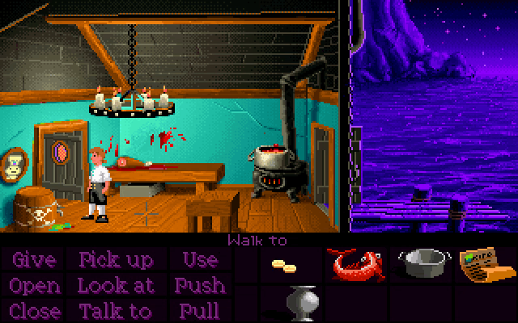
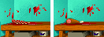
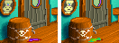
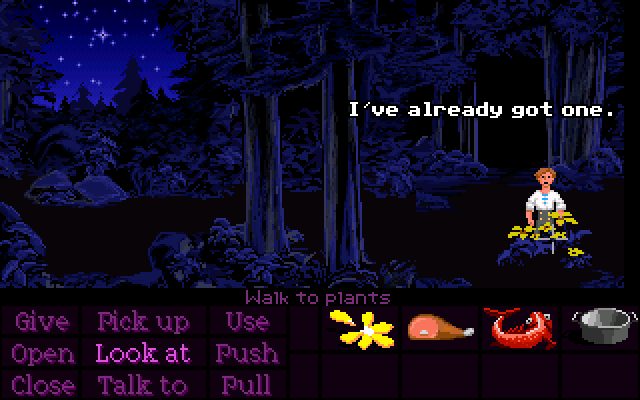
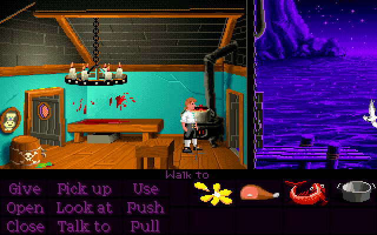
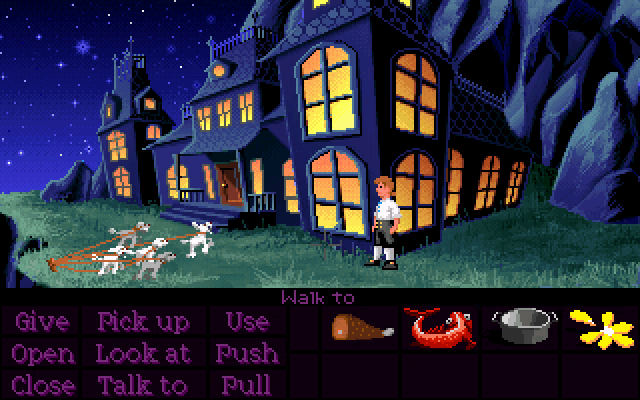

If you take the vase from the mansion and try to fill it with grog from the barrel, it will instantly be destroyed.

The hunk of meat looks drastically different between the floppy versions and the CD version. In the CD version, it looks like a leg of ham, while in the floppy versions, it looks more like some kind of carcass or ribcage.

In the floppy versions, the puddle of grog under the tap is purple. In the CD version, it was changed to green, which is consistent with the other depictions of grog in the game.

Normally, the game will only ever let you take one yellow petal from the forest. Even after putting the dogs to sleep, Guybrush will refuse to take another.

The game makes one exception, though - if Guybrush puts the yellow petal into the pot of stew in the kitchen, then it will let him take a new one.

However, there's an alternative way of spiking the meat. Instead of combining the meat and petal directly, you can put them separately into the pot and then take the meat back out. If you do it this way, then the game will let you take another petal, because it thinks your old one is still in the pot.
You can now feed the pre-spiked meat to the dogs while also keeping the yellow petal in your inventory. The game will let you hold onto it until the beginning of Part 3, when it gets taken away.
